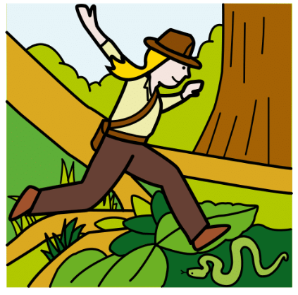
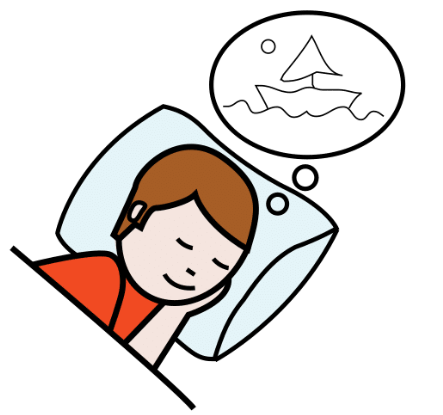
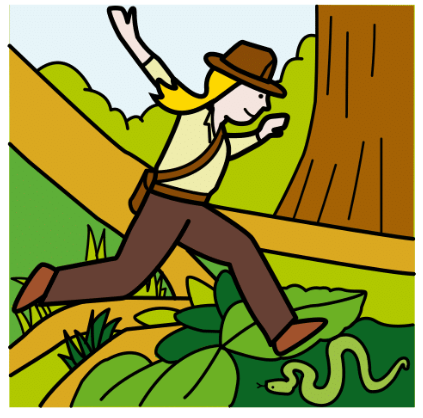
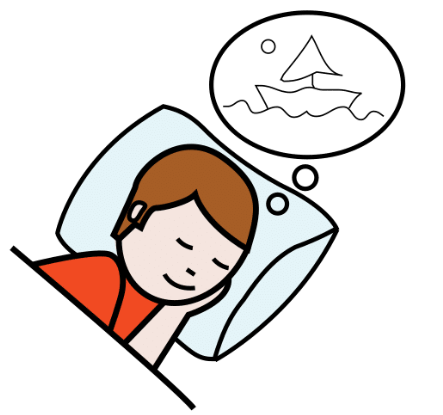
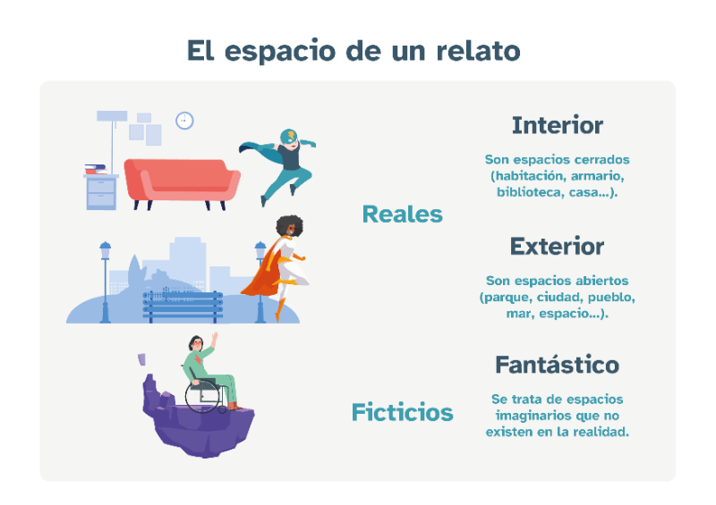
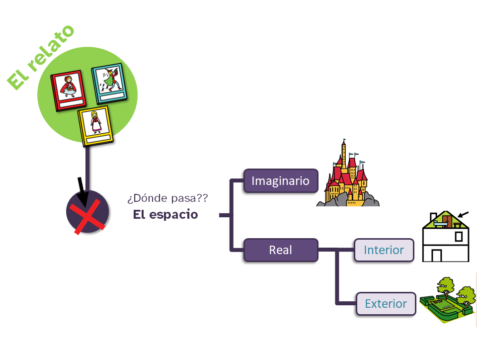

Diccionario
Aventuras

Definición:
Algo que vivimos especial, diferente e interesante.
Ejemplo:La aventura que vivimos fue genial.
Imaginados

Definición:
Que no son reales.
Ejemplo:Los sueños e ilusiones imaginados a veces se cumplen.

Definición:
Algo que vivimos especial, diferente e interesante.
Ejemplo:La aventura que vivimos fue genial.

Definición:
Que no son reales.
Ejemplo:Los sueños e ilusiones imaginados a veces se cumplen.
Los hechos que se narran siempre están situados en un espacio, un lugar que se crea a propósito para cada relato.
¡No es momento de dormirte! Vas a ver qué tipos de espacios pueden aparecer y más datos sobe este elemento.
Presta atención porque estamos muy cerca del final.
Los hechos que se narran siempre están situados en un espacio, un lugar que se crea a propósito para cada relato.
¡No es momento de dormirte! Vas a ver qué tipos de espacios pueden aparecer y más datos sobe este elemento.
Presta atención porque estamos muy cerca del final.
Toda narración sucede en un sitio determinado. En esta infografía vas a conocer cuáles son los tipos de espacios que te puedes encontrar en un relato, cuento, novela.... A continuación, encontrarás algunos ejemplos para que te quede más claro.

Todos los relatos ocurren en un lugar.
Veamos estos lugares:
Los espacios reales son lugares que existen, que reconocemos.
Hay dos tipos:
Los espacios ficticios son espacios imaginarios que no existen.
Hay sólo un tipo:


Ya queda muy poco para ver el resultado de vuestras historias.
Volvemos a presentarte varios ejercicios para que demuestres qué has aprendido sobre el espacio en una historia. Elige el que mejor te venga.
¡Mucho ánimo!

Elige una de las actividades siguientes: opción A, opción B, opción C u opción D.
Resuelve la actividad que hayas elegido.
¡Mucho ánimo!
Ya queda poco para ver el resultado de la historia creada.
Te presentamos varias opciones y tú eliges el ejercicio que más te guste. Comprueba de este modo si tienes claro qué es el espacio en una narración.
Ejemplo: tu instituto, tu casa, las calles son lugares que existen porque son reales.
Sin embargo, los lugares de muchos de los videojuegos no existen de verdad. Son ficticios.
Di qué tipo de espacio es en cada caso (real o ficticio).
Seguro que conoces muchos lugares de otras historias que hayas leído. Enumera 5 y clasifícalos fijándote en lo que has aprendido en la infografía.
¿Eres capaz de cambiar el lugar donde suceden los hechos del relato "El elefante encadenado"? Inventa uno y di cómo es ese lugar.
Aquí tienes una sugerencia: imagina que el relato sucede en una selva.
Hay espacios muy chulos en los que seguro que nos gustaría estar y que allí nos pasaran aventuras. No puedes estar en todos, pero sí tienes la posibilidad de decidir dónde quieres que ocurra la narración que estás contando.
Usa tu poder para imaginar lugares y vamos a describir ese fabuloso lugar con el que seguro has soñado.
Definición:
Algo que vivimos especial, diferente e interesante.
Ejemplo:La aventura que vivimos fue genial.
Definición:
Que no son reales.
Ejemplo:Los sueños e ilusiones imaginados a veces se cumplen.
Hay espacios muy chulos en los que seguro que nos gustaría estar y que allí nos pasaran aventuras. No puedes estar en todos, pero sí tienes la posibilidad de decidir dónde quieres que ocurra la narración que estás contando.
Usa tu poder para imaginar lugares y vamos a describir ese fabuloso lugar con el que seguro has soñado.
Definición:
Algo que vivimos especial, diferente e interesante.
Ejemplo:La aventura que vivimos fue genial.
Definición:
Que no son reales.
Ejemplo:Los sueños e ilusiones imaginados a veces se cumplen.

Ya hemos aprendido qué es el espacio y de qué tipos puede ser.
Ahora te toca a ti, selecciona el espacio donde va a suceder tu relato. Recuerda el relato que elaboraste con los dados cuenta-historias y utilízalo como punto de partida.
Cuando lo tengas decidido, completa la ficha del guion con la información.
Recuerda hacerlo en la ficha que descargaste para rellenarla en tu dispositivo, sin olvidar guardar los cambios, o imprimirla para rellenarla manualmente.
¡Lo sé! ¡Qué difícil es pensar en un espacio! Pero ya tienes pensados otros elementos.
Además, seguro que conoces muchos lugares donde tus personajes pueden vivir verdaderas historias.
¿Te preocupa no elegir bien?
Calma, siempre puedes cambiar el espacio por otro que te parezca mejor.
Obra publicada con Licencia Creative Commons Reconocimiento No comercial Compartir igual 4.0